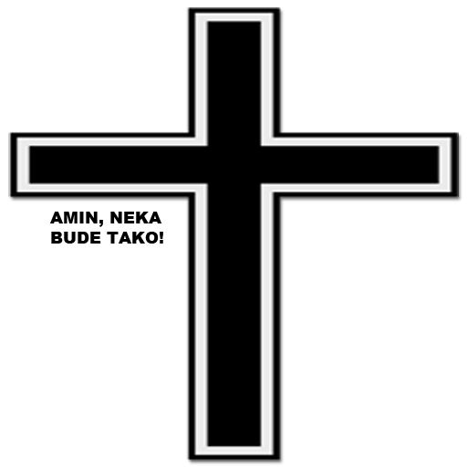

Помени, Господе, оце и браћу нашу уснуле у нади на васкрсење у живот вечни, и све упокојене у побожности и вери, и опрости им свако сагрешење, хотимично и нехотимично, што сагрешише речју, или делом, или мишљу. И усели их у места светла, у места свежине, у места одмора, одакле одбеже свака мука, жалост и уздисање, где гледање лица Твога весели све од века свете Твоје. Даруј им царство Твоје и учешће у неисказаним и вечним Твојим добрима, и наслађивање у Твом бесконачном и блаженом животу. Јер си Ти живот, и васкрсење и покој уснулих слугу Твојих, Христе, Боже наш, и Теби славу узносимо са беспочетним Твојим Оцем и Пресветим, и Благим, и животворним Твојим Духом, сада и увек и у векове векова. Амин.